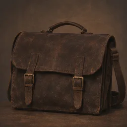

Рабочий набор: Мира Калинина
Личные принадлежности для расследования; состав согласуют с ведущим. Набор не даёт автоматических бонусов.
Владелец по комплекту: Мира Калинина
Рабочий набор: Павел Устинов
Личные принадлежности для расследования; состав согласуют с ведущим. Набор не даёт автоматических бонусов.
Владелец по комплекту: Павел Устинов
Рабочий набор: Софья Нечаева
Личные принадлежности для расследования; состав согласуют с ведущим. Набор не даёт автоматических бонусов.
Владелец по комплекту: Софья Нечаева
Рабочий набор: Антон Белозёрский
Личные принадлежности для расследования; состав согласуют с ведущим. Набор не даёт автоматических бонусов.
Владелец по комплекту: Антон Белозёрский
Рабочий набор: Елена Гурина
Личные принадлежности для расследования; состав согласуют с ведущим. Набор не даёт автоматических бонусов.
Владелец по комплекту: Елена Гурина
Рабочий набор: Григорий Шумов
Личные принадлежности для расследования; состав согласуют с ведущим. Набор не даёт автоматических бонусов.
Владелец по комплекту: Григорий Шумов
Рабочий набор: Яна Бельская
Личные принадлежности для расследования; состав согласуют с ведущим. Набор не даёт автоматических бонусов.
Владелец по комплекту: Яна Бельская
Рабочий набор: Рустам Каримов
Личные принадлежности для расследования; состав согласуют с ведущим. Набор не даёт автоматических бонусов.
Владелец по комплекту: Рустам Каримов